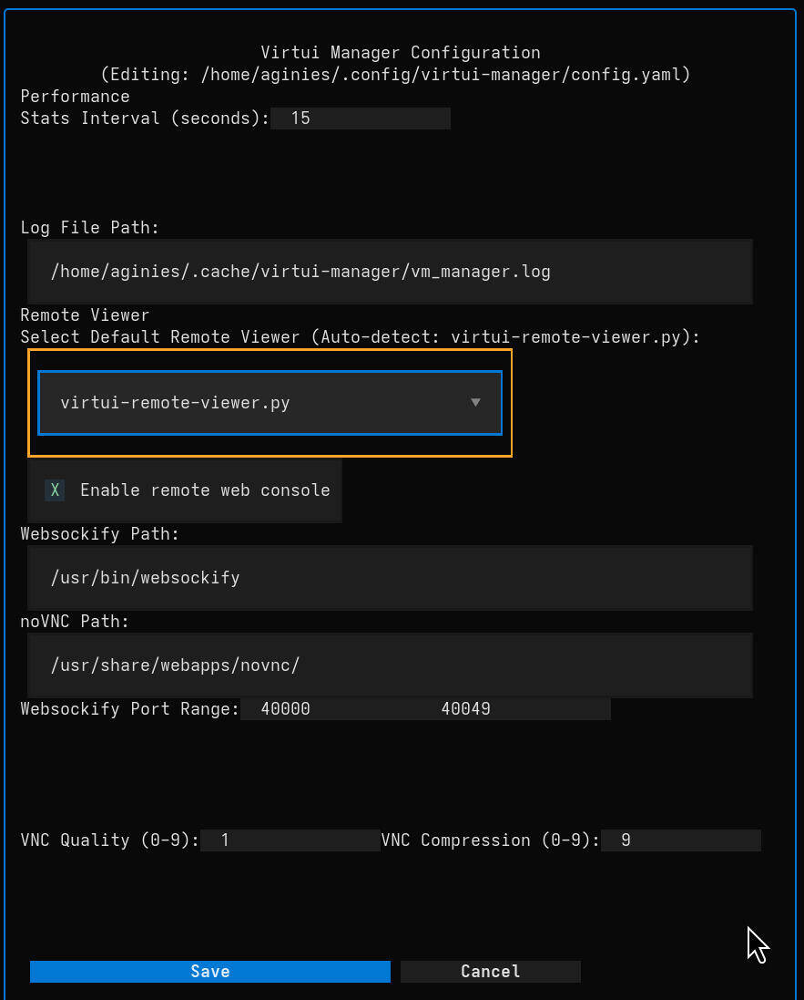

App Configuration¶
VirtUI Manager allows you to customize various aspects of its behavior, including performance settings, logging, and remote viewer integration.
To access the configuration, press c on your keyboard while in the main window.

Configuration File¶
VirtUI Manager uses a YAML configuration file for customization:
- User-specific:
~/.config/virtui-manager/config.yaml - System-wide:
/etc/virtui-manager/config.yaml
While most settings can be managed via the UI, VirtUI Manager stores its configuration in these human-readable files. If the user-specific file does not exist, VirtUI Manager will create it with default values upon the first launch or when you save settings from the UI.
Example Configuration¶
# Performance and UI
STATS_INTERVAL: 15
REMOTE_VIEWER: null
# ISO Management
ISO_DOWNLOAD_PATH: /home/isos
# Logging
LOG_FILE_PATH: /home/aginies/.cache/virtui-manager/vm_manager.log
LOG_LEVEL: INFO
# Web Console (noVNC)
REMOTE_WEBCONSOLE: true
novnc_path: /usr/share/webapps/novnc/
websockify_path: /usr/bin/websockify
WEBSOCKIFY_BUF_SIZE: 4096
WC_PORT_RANGE_START: 40000
WC_PORT_RANGE_END: 40049
VNC_QUALITY: 1
VNC_COMPRESSION: 9
# ISO Repositories
custom_ISO_repo:
- name: Alpine 3.23 x86_64
uri: https://dl-cdn.alpinelinux.org/alpine/v3.23/releases/x86_64/
- name: Slackware 16
uri: https://mirrors.slackware.com/slackware/slackware-iso/slackware64-15.0-iso/
- name: Qubes R4 3.0
uri: https://mirrors.edge.kernel.org/qubes/iso/
# Servers List
servers:
- autoconnect: false
name: Localhost
uri: qemu:///system
- autoconnect: false
name: ryzen9
uri: qemu+ssh://root @10.0.1.38/system
- autoconnect: false
name: ryzen7
uri: qemu+ssh://root @10.0.1.78/system
Key Fields Explained¶
servers: A list of Libvirt connections. Each entry requires aname(for display), auri(the Libvirt connection string), and an optionalautoconnectboolean.ISO_DOWNLOAD_PATH: The directory where downloaded ISO images are stored.custom_ISO_repo: A list of remote or local repositories. Each entry needs anameand auri(HTTP/HTTPS URL or local path).
Performance¶
- Stats Interval (seconds):
- Determines how frequently the application updates VM status and statistics (CPU, Memory, I/O).
- Default:
15seconds. - Tip: Increasing this value can reduce the load on the host system, while decreasing it provides more real-time updates.
Logging¶
-
Log File Path:
- The full path where the application writes its log file.
- Useful for troubleshooting issues.
-
Log Level:
- Sets the verbosity of the log file.
- Options:
DEBUG,INFO(Default),WARNING,ERROR,CRITICAL. - Tip: Use
DEBUGfor detailed troubleshooting, but be aware that it can generate large log files.
Remote Viewer¶
This section controls how the graphical console of VMs is accessed.
- Select Default Remote Viewer:
- Choose the application used to view the VM's display.
- Options:
virtui-remote-viewer.py: The built-in viewer (recommended).virt-viewer: The standard external viewer.null: Auto-detects an available viewer.
Web Console (noVNC)¶
These settings configure the built-in web-based remote console capabilities, useful for headless server environments or accessing VMs via a browser.
- Enable remote web console:
- Toggles the availability of the web console feature.
- When enabled, it allows secure SSH and noVNC remote viewing.
- Websockify Path:
- Path to the
websockifybinary, which translates VNC traffic to WebSockets. - Default:
/usr/bin/websockify
- Path to the
- Websockify Buffer Size:
- Buffer size for the websockify connection.
- Default:
4096
- noVNC Path:
- Path to the noVNC web assets (HTML/JS/CSS).
- Default:
/usr/share/webapps/novnc/(common on Arch/Manjaro) or/usr/share/novnc/(Debian/Ubuntu).
- Websockify Port Range:
- Defines the range of local ports the application can use for WebSocket connections.
- Start: Default
40000 - End: Default
40049
- VNC Quality (0-9):
- Sets the visual quality of the VNC stream.
- Range: 0 (Lowest) to 9 (Highest).
- Default:
1(Optimized for speed).
- VNC Compression (0-9):
- Sets the compression level for the VNC stream.
- Range: 0 (None) to 9 (Maximum).
- Default:
9(Maximum compression to save bandwidth).